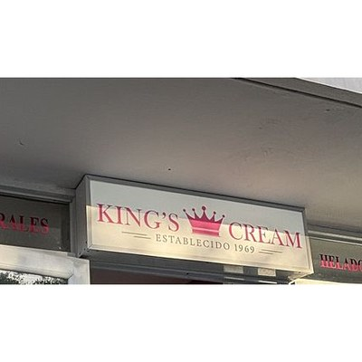
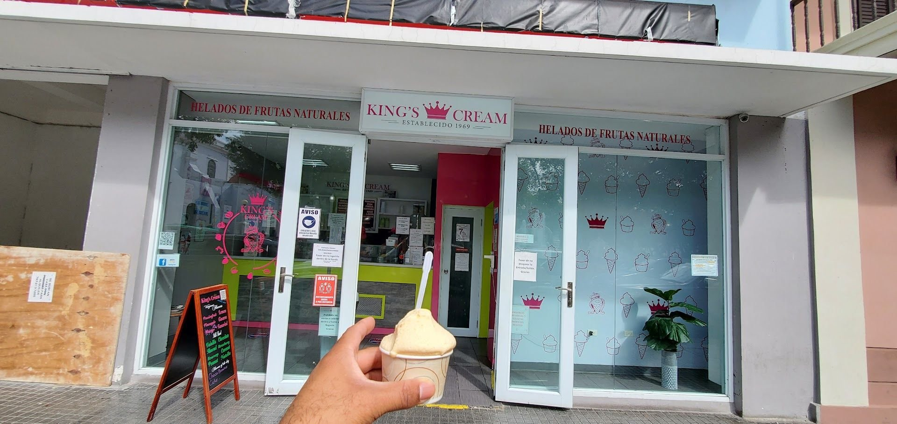
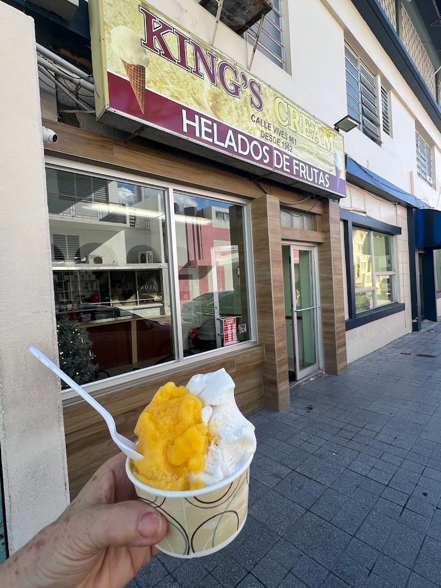
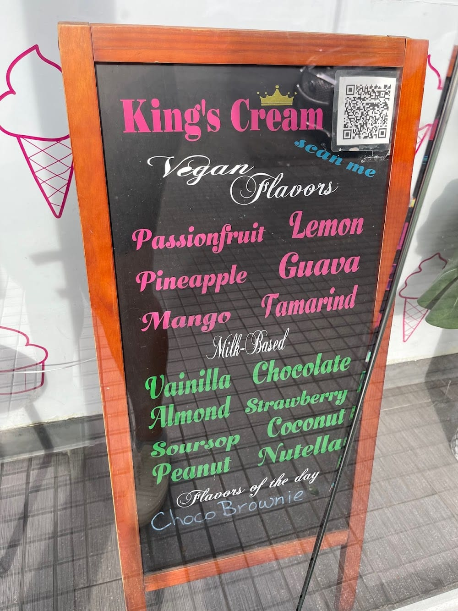
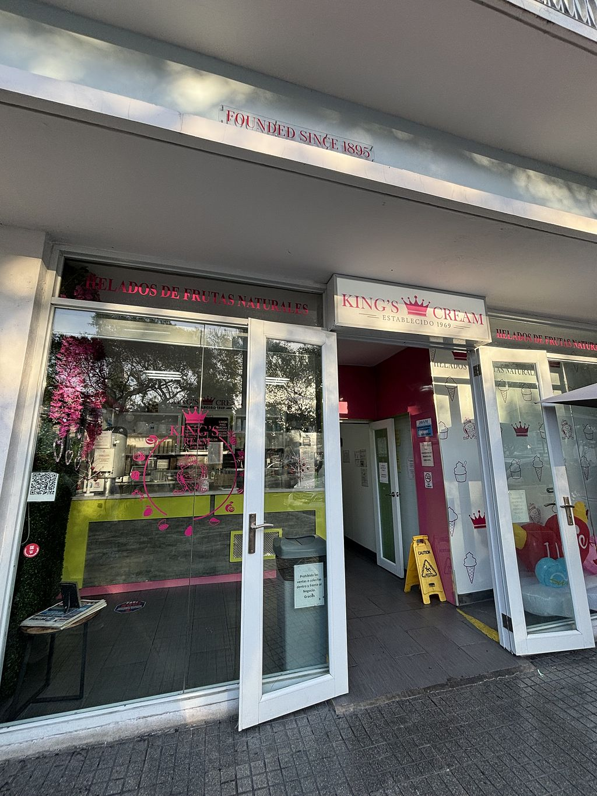
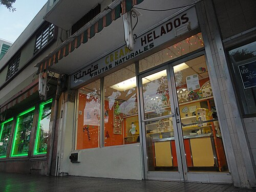

Helados chinos de frutas
El clásico ponceño: helado artesanal de fruta servido en copa, cremoso y lleno de sabor tropical.
CocoTamarindoParchaPistachoLimón

King's CreamPONCE - 1969
Helados artesanales de frutas naturales frente al Parque de Bombas. Coco, tamarindo, parcha, pistacho y limón, hechos como siempre: de verdad.
Recetas de siempre, fruta de verdad y ese toque artesanal que nos hizo leyenda en el sur.
El clásico ponceño: helado artesanal de fruta servido en copa, cremoso y lleno de sabor tropical.

Cremosos y hechos en casa, con la textura densa del mantecado de verdad. Pruébalos combinados.

Opciones 100% de fruta para todos: parcha, limón, piña, guayaba, mango y tamarindo, sin lácteos.

Refrescantes paletas artesanales de fruta natural, perfectas para llevar mientras paseas la Plaza.
Desde 1969, King's Cream es parada obligada en Ponce. Generaciones enteras crecieron con nuestros helados chinos frente a la Plaza Las Delicias, y seguimos haciendo todo igual: artesanal, con fruta natural y con el cariño de siempre.

Fotos reales de nuestro local y nuestros helados en Ponce.
Abrimos todos los días: lunes a sábado de 9:00am a 11:30pm y domingos de 9:00am a 11:30pm (según listado público).
Frente al Parque de Bombas, en la Plaza Las Delicias de Ponce. No tiene pérdida: busca la corona roja.
Sí. Nuestros helados de fruta como parcha, limón, piña, guayaba, mango y tamarindo son opciones veganas de fruta, hechas sin lácteos.
Puedes llamarnos al 787-843-8520.
Desde 1969. Somos la heladería tradicional ponceña de los helados chinos, con más de 55 años de historia.
Si estás en Ponce y no pasas por King's Cream, no estuviste en Ponce. Ven por tu helado chino frente al Parque de Bombas.
Frente al Parque de Bombas, Plaza Las Delicias, Ponce